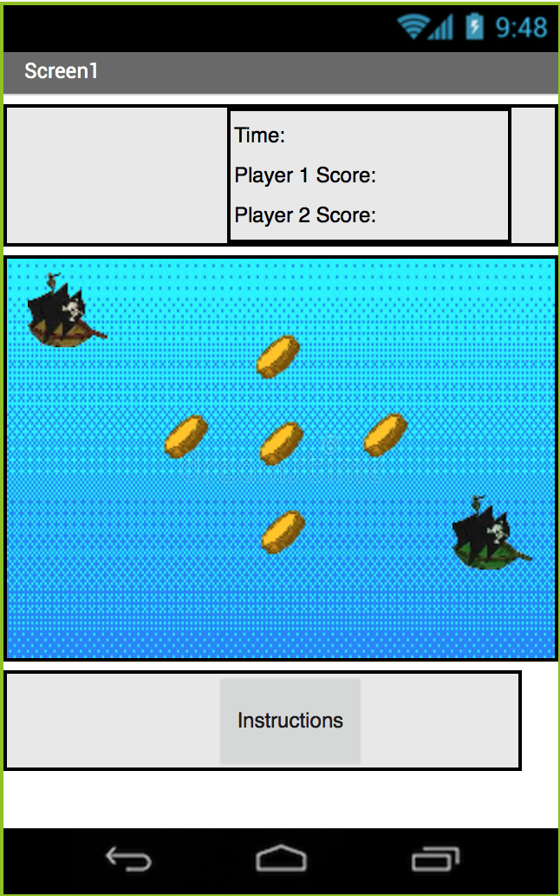

I made this project with Alan Liang using Scratch.
We had to make a game with multiple levels that increased in difficulty.
First, we brainstormed what games we wanted to try, like mazes,
shell games, and platformers. Eventually, we narrowed it down to
the platformer because there were a lot of features that we could
include in it. Then we started programming and made a rough
draft of the game. The game was shared to another group in order to
get feedback on what we had to improve on. Alan and I fixed those
problems and we created the game that you can play on the right.
This platform game has four levels. The difficulty level increases
when you pass a level. Use the arrow keys to move the player
(the blue block) around. The goal of the game is to touch the purple gem
in order to get to the next level. There are also basic
instructions in the game. After you go through all of the levels,
there will be an option to play again. Time yourself using a watch
and see how fast you can complete all four levels.
For full documentation, click here.

This app is a game that runs on Android devices. I made this project with Daylen Boen using
MIT App Inventor.
We used the Get the Gold tutorial to have a starting point. The features
in the game were not very user friendly and the game itself was bland.
Daylen and I brainstormed possible things that we could put into the game, like
score and time. We programmed our beta version which had more features than
the original game, but still wasn't finished. Eventually, we added
the two player mode so people could play together. The controls of the
game are a little laggy and buggy, but when we tried to fix it by having
button controls, MIT App Inventor did not support multi-touch.
In this game, grab a friend and get ready to play. The brown ship is
Player 1 and the green ship is Player 2. The object of the game is to
collect as many coins by swiping your ship in the direction that you want
to go in. When time runs out, the player with the most coins wins. Try
to play at least three times and see who wins the most!
Access the game here (you need an Android device to scan the code).
For full documentation, click here.